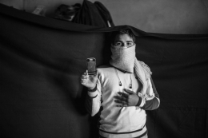

先ごろ世界法学会より発刊されました「世界法年報」第32号に、「国際人道システムの発展と東日本大震災」という論文が発表されました。所長の渡部と前内閣府村上威夫氏との共著です。2012年の世界法学会研究大会での発表内容に基づき、自然災害時における国際緊急支援の調整メカニズムと国連の果たす役割を、東日本大震災時の国際支援受け入れも含め論じています。なお論文の構成は以下の通りです。
OCHAは先頃「ネットワーク時代の人道支援」と題したレポートを発表致しました。東日本大震災の経験も含め、情報技術の発展が緊急人道支援にとってどういうことを意味するのか。このレポートの要点を紹介させて頂きます。
１．ネットワーク時代の到来が、災害対応の方法に変化をもたらした
OCHAのジョン・ギング業務局長は、シリアにおける人道支援活動がすでにかなりの制約を受けているにもかかわらず、政府当局が更にこれを意識的に阻害していると指摘し、シリア危機の政治的な解決を緊急に実現するよう国際社会に対して重ねて訴えました。
内戦で荒廃したシリアから今週帰国したギング氏はニューヨークで記者会見し、反政府勢力が掌握する地域へ国連機関が隣国を経由して立ち入ることをシリア政府が拒み、代わりに危険な戦闘ラインを超えて入るよう求めたことを非難し、「戦闘ラインは超えてもよいが、国境はだめというのは論理的根拠がない」と訴え、さらにこう付け加えました。「しかし支援が滞った結果、人々が今も次々と亡くなっている。」
シリアの現状について、国連人道問題調整事務所(OCHA)、国連児童基金(UNICEF)、国連難民高等弁務官事務所(UNHCR)、そして世界食糧計画(WFP)という国連人道機関のリーダー達が声を合わせ、皆様に直接お届けするひとつのメッセージです。ぜひこちらの日本語字幕付きビデオをご覧ください。
2013年4月2日、武器貿易条約が国連総会で採択されました。紛争下における文民の保護、避難民の発生及び人道要員の安全確保等、国際人道課題の克服という観点からも、重要な条約となります。
これに先立ち、OCHAのトップであるヴァレリー・エイモス人道問題担当国連事務次長・兼・緊急援助調整官が、他の国連人道機関を代表し、声明を述べました。以下の通り日本語訳を作成いたしましたので、ぜひご覧ください。
OCHAはIRINという情報サービスを通じて世界の人道問題に関するニュースや分析を提供しています。一般メディアが取り扱うことが少なくとも、国際的な緊急人道支援に関心のある実務家、研究者、メディア関係者にとって有用な情報を、国・地域・テーマ毎に英語、フランス語、アラビア語でお届けしています。また写真・映像コンテンツも充実しています。1995年にルワンダで起こったジェノサイドの教訓をもとにに設立されたIRINは、専門のライターたちによって良質の記事が書かれ、その編集方針の独立性も保たれています。Emailでの配信を希望される方は無料登録が可能です。こちらよりアクセスの上、ぜひご活用ください。
首都モガディシュでは、25万人以上もの国内避難民が劣悪な環境下でキャンプ生活を送っています。OCHAソマリア事務所が管理する共通人道基金を活用し、より安全で衛生的な仮設住居へのこうした人々の移送が始まりました。今も避難生活を送る避難民女性の声や、副人道調整官からのメッセージをどうぞ直接お聞きください。
 先ごろ世界法学会より発刊されました「世界法年報」第32号に、「国際人道システムの発展と東日本大震災」という論文が発表されました。所長の渡部と前内閣府村上威夫氏との共著です。2012年の世界法学会研究大会での発表内容に基づき、自然災害時における国際緊急支援の調整メカニズムと国連の果たす役割を、東日本大震災時の国際支援受け入れも含め論じています。なお論文の構成は以下の通りです。
先ごろ世界法学会より発刊されました「世界法年報」第32号に、「国際人道システムの発展と東日本大震災」という論文が発表されました。所長の渡部と前内閣府村上威夫氏との共著です。2012年の世界法学会研究大会での発表内容に基づき、自然災害時における国際緊急支援の調整メカニズムと国連の果たす役割を、東日本大震災時の国際支援受け入れも含め論じています。なお論文の構成は以下の通りです。


 OCHAの現地オペレーションを統括するジョン・ギング業務局長(Director, Coordination and Response Division)が先頃ミャンマーとフィリピンを訪問しました。特に、ミャンマー国内避難民の窮状に触れ、様々な指導者による緊張緩和努力を訴えています。本部のホームページから発信されている
OCHAの現地オペレーションを統括するジョン・ギング業務局長(Director, Coordination and Response Division)が先頃ミャンマーとフィリピンを訪問しました。特に、ミャンマー国内避難民の窮状に触れ、様々な指導者による緊張緩和努力を訴えています。本部のホームページから発信されている 2013年4月2日、武器貿易条約が国連総会で採択されました。紛争下における文民の保護、避難民の発生及び人道要員の安全確保等、国際人道課題の克服という観点からも、重要な条約となります。
2013年4月2日、武器貿易条約が国連総会で採択されました。紛争下における文民の保護、避難民の発生及び人道要員の安全確保等、国際人道課題の克服という観点からも、重要な条約となります。